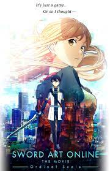
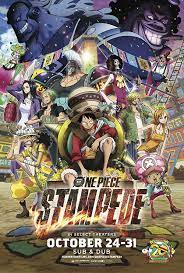
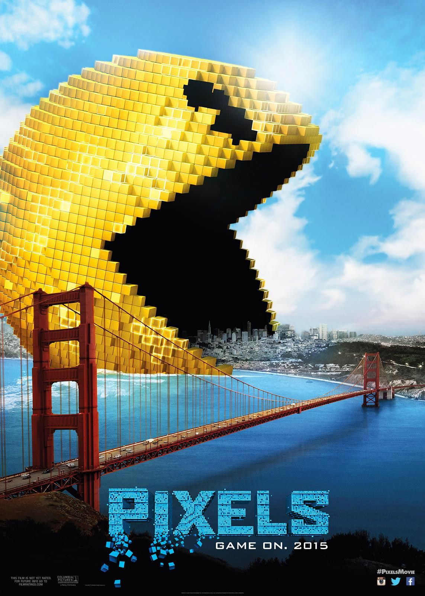
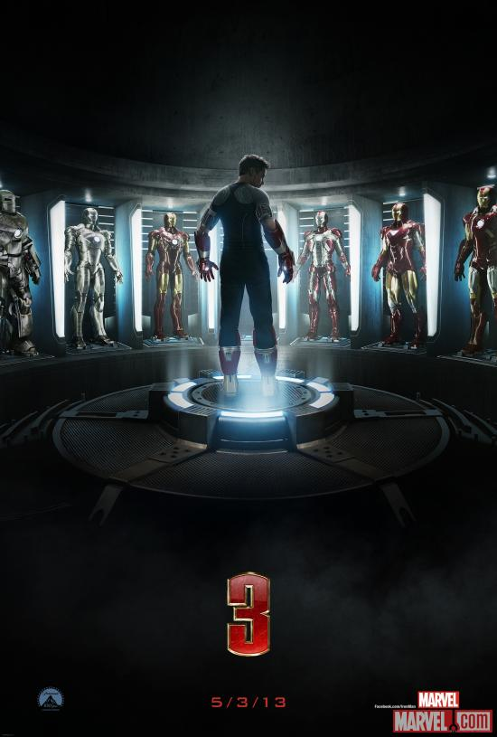
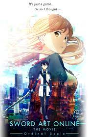
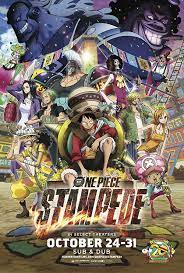
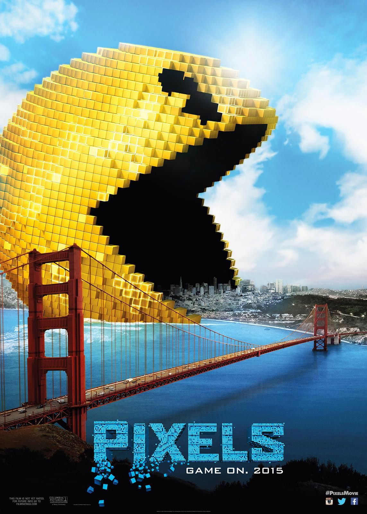
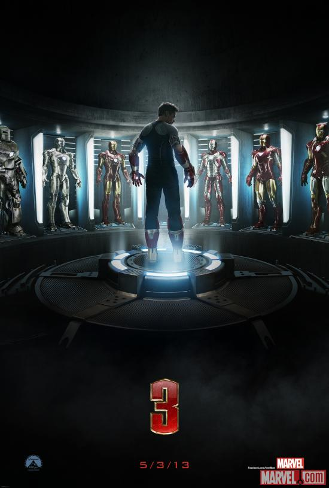
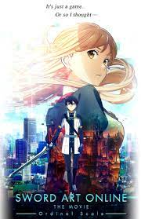
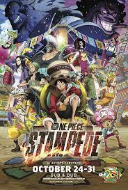
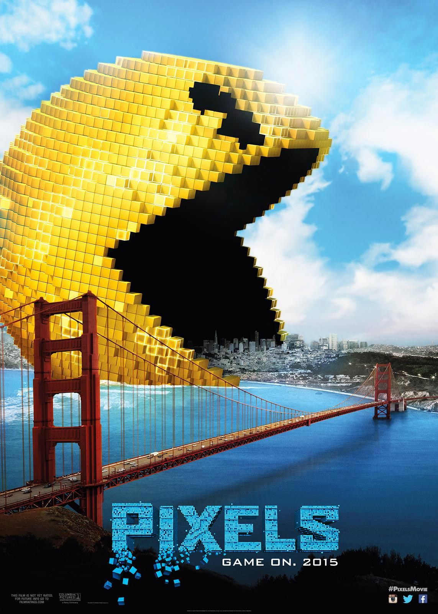
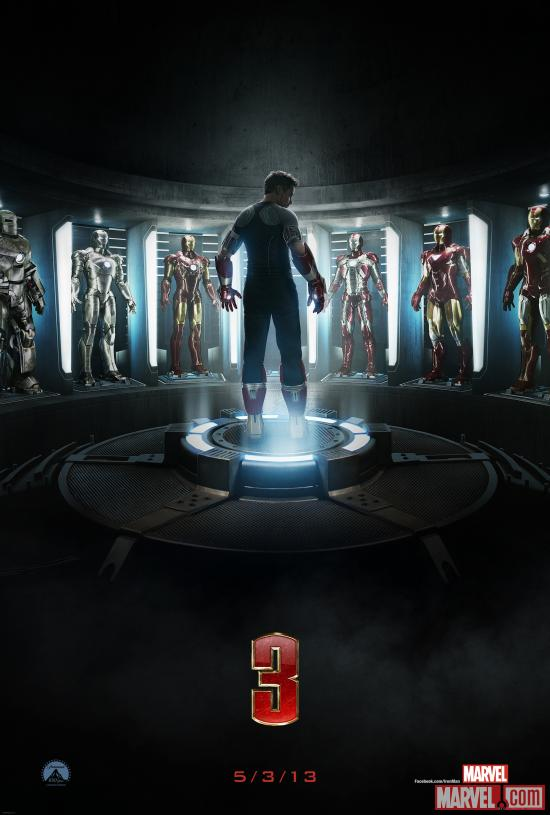
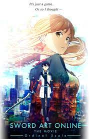
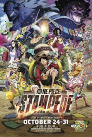
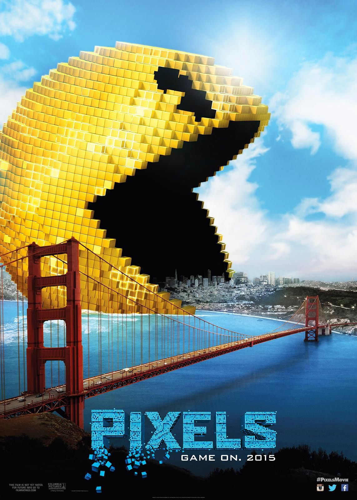
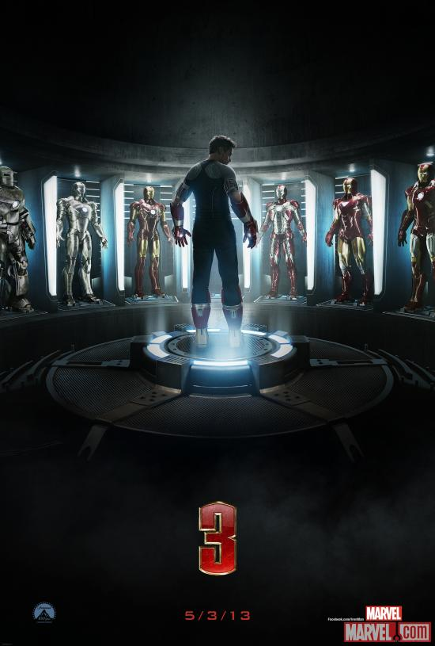
Eddie Brock (Tom Hardy) is a famous journalist/ reporter who follows people who
dont want to be followed as he puts it. He comes across the Life Foundation and
in an attempt to uncover allegations the foundation received, he loses his entire
career. Six months later he is brought back to the foundation by one of their leading
scientists but in his visit, Eddie comes across an alien known as a Symbiote. Venom,
the Symbiote, choses to attach and adapt to Eddies body however this gets Brock in
trouble by Carlton Drake (Riz Ahmed), the leader of the Life Foundation. Eddie and Venom
must stop Drake from continuing with his plans of turning the humans en masse into full
Symbiotes with his invasion forces.
In 2026, a new machine called the Augma is developed to compete against the NerveGear and its successor, the Amusphere. A next-gen wearable device, the Augma doesn't have a full-dive function like its predecessors. Instead, it uses Augmented Reality (AR) to get players into the game. It is safe, user-friendly and lets users play while they are conscious, making it an instant hit on the market. The most popular game on the system is "Ordinal Scale" (aka: OS), an ARMMORPG developed exclusively for the Augma. Asuna and the gang have already been playing OS for a while, and soon Kirito decides to join them. However, they're about to find out that Ordinal Scale isn't all fun and games.
The world's greatest exposition of the pirates, by the pirates, for the pirates—the Pirates Festival. Luffy and the rest of the Straw Hat Crew receive an invitation from its host Buena Festa who is known as the Master of Festivities. They arrive to find a venue packed with glamorous pavilions and many pirates including the ones from the Worst Generation. The place is electric.
In 1982, the boy Sam Brenner disputes the video game arcade championship and loses the title to Eddie "The Fire Blaster" Plant playing Donkey Kong. This defeat affects his life and in the present days, Brenner is an installer of audio and video systems. His best friend Will Cooper is the President of the United States. Brenner is installing a system at the house of Violet Van Patten, who has just divorced, for her son Matty. Out of the blue, he is summoned to the White House and he finds that Violet is a military that works there. Soon he learns that an American base was attacked by aliens. When he meets his friend Ludlow "The Wonder Kid" Lamansoff , he discovers that the aliens have found a time capsule sent by the US Government to the space with a videocassette of videogame and understood that it was a declaration of war. The aliens broadcast a challenge to Earth to play and win a videogame against them; otherwise Earth will be destroyed. Now the last hope on Earth is Brenner, Cooper, Ludlow, Violet and Eddie.
Tony Stark (Robert Downey, Jr.) wrestles with inner demons while contending with monsters of his own creation in this sequel from writer\director Shane Black. The story in Iron Man 3 picks up shortly after the events of The Avengers. Having previously entered another dimension in order to save New York City, Tony remains deeply haunted by the experience. Unable to sleep, he throws himself into his work with such intensity that it begins to take a heavy toll on both his mental health and his relationship with Pepper Potts (Gwyneth Paltrow). Tony has only started to appreciate the gravity of his problems when an enigmatic terrorist named the Mandarin (Ben Kingsley) hijacks the airwaves and threatens to bring America to its knees with a painful series of " lessons" that even President Ellis (William Sadler) won't be able to ignore. When Tony's former security guard Happy Hogan (Favreau) is badly injured in an explosion caused by one of the Mandarin's agents, the vengeful playboy issues a public threat that results in his home being completely destroyed in a devastating attack, leaving him to face his enemy with only one badly damaged prototype suit. Fortunately, Tony isn't on his own, and with the help of Col. James Rhodes (Don Cheadle) and a young boy named Harley (Ty Simpkins), he pieces together the mystery of the Mandarin, whose final "lesson" promises to be the most painful of all.